如何自定义 GNOME 3 桌面？
| 2019-08-22 00:02 评论: 3 收藏: 1
我们收到很多来自用户的电子邮件，要我们写一篇关于 GNOME 3 桌面自定义的文章，但是，我们没有时间来写这个主题。
在很长时间内，我一直在我的主要笔记本电脑上使用 Ubuntu 操作系统，并且，渐感无聊，我想测试一些与 Arch Linux 相关的其它的发行版。
我比较喜欢 Majaro，我在我的笔记本电脑中安装使用了 GNOME 3 桌面的 Manjaro 18.0 。
我按照我想要的自定义我的桌面。所以，我想抓住这个机会来详细撰写这篇文章，以帮助其他人。
这篇文章帮助其他人来轻松地自定义他们的桌面。
我不打算包括我所有的自定义，并且，我将强制性地添加一个对 Linux 桌面用户来说有用的必要的东西。
如果你觉得这篇文章中缺少一些调整，请你在评论区提到缺少的东西。对其它用户来说这是非常有用的 。
1) 如何在 GNOME 3 桌面中启动活动概述？
活动概述将显示所有运行的应用程序，或通过单击 Super 键 ，或在左上角上单击“活动”按钮来启动/打开窗口。
它允许你来启动一个新的应用程序、切换窗口，和在工作空间之间移动窗口。
你可以通过选择如下任一操作简单地退出活动概述，如选择一个窗口、应用程序或工作区间，或通过按 Super 键或 Esc 键。

活动概述屏幕截图
2) 如何在 GNOME 3 桌面中重新调整窗口大小？
通过下面的组合键来将启动的窗口最大化、取消最大化，并吸附到屏幕的一侧（左侧或右侧）。
Super Key+下箭头：来非最大化窗口。Super Key+上箭头：来最大化窗口。Super Key+右箭头：来在填充半个屏幕的右侧窗口。Super Key+作箭头：来在填充半个屏幕的左侧窗口。
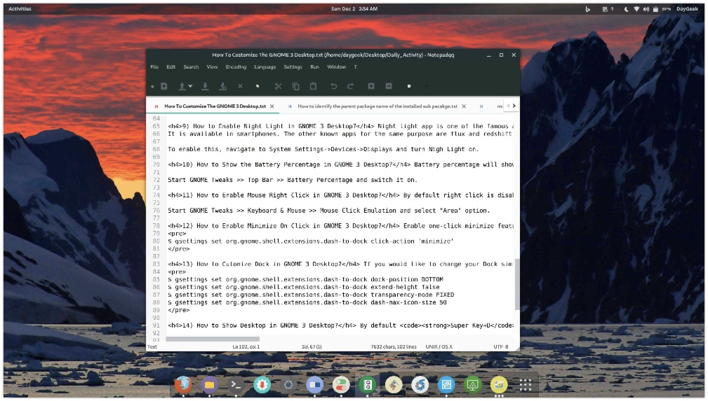
使用 Super Key+下箭头 来取消最大化窗口。
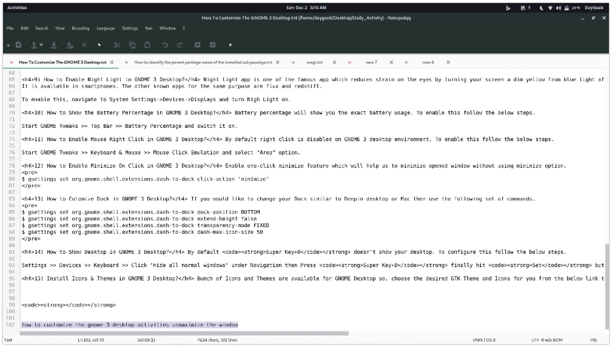
使用 Super Key+上箭头 来最大化窗口。
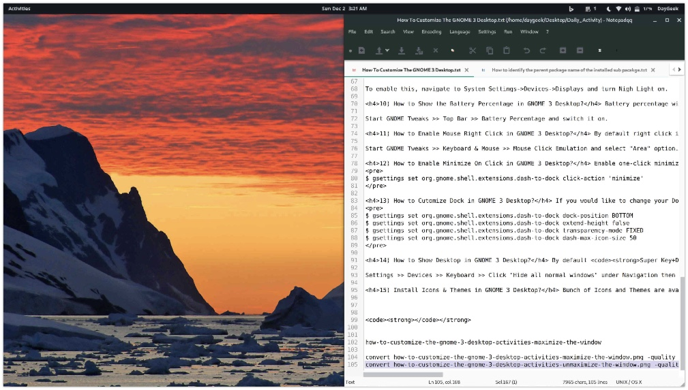
使用 Super Key+右箭头 来在填充半个屏幕的右侧窗口。
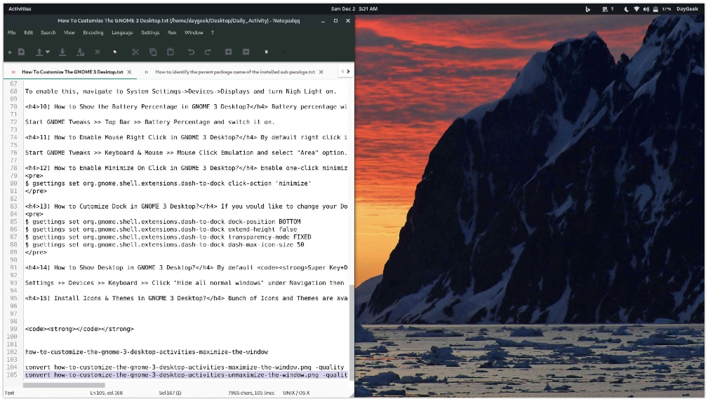
使用 Super Key+左箭头 来在填充半个屏幕的左侧窗口。
这个功能将帮助你可以一次查看两个应用程序，又名，拆分屏幕。
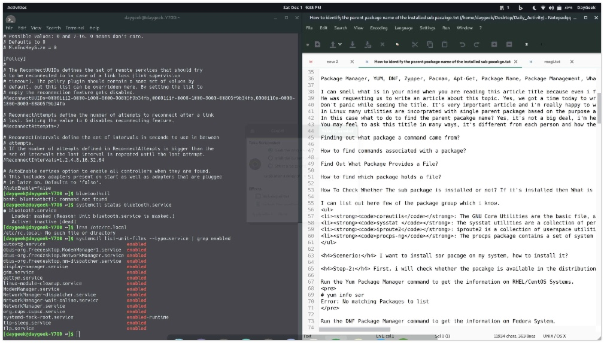
3) 如何在 GNOME 3 桌面中显示应用程序？
在 Dash 中，单击“显示应用程序网格”按钮来显示在你的系统上的所有已安装的应用程序。
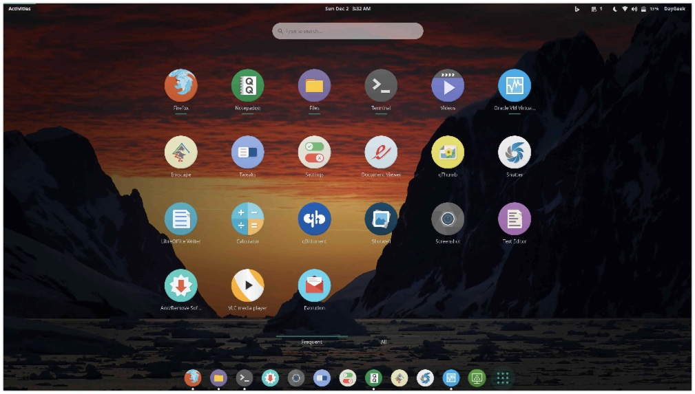
4) 如何在 GNOME 3 桌面中的 Dash 中添加应用程序？
为加速你的日常活动，你可能想要把频繁使用的应用程序添加到 Dash 中，或拖拽应用程序启动器到 Dash 中。
它将允许你直接启动你的收藏夹中的应用程序，而不用先去搜索应用程序。为做到这样，在应用程序上简单地右击，并使用选项“添加到收藏夹”。
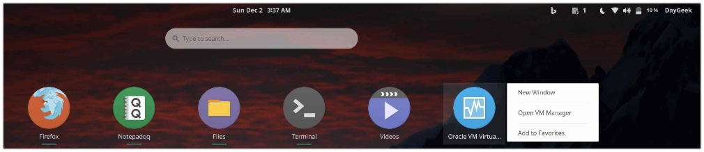
为从 Dash 中移除一个应用程序启动器（收藏的程序），要么从 Dash 中拖拽应用程序到网格按钮，或者在应用程序上简单地右击，并使用选项“从收藏夹中移除”。
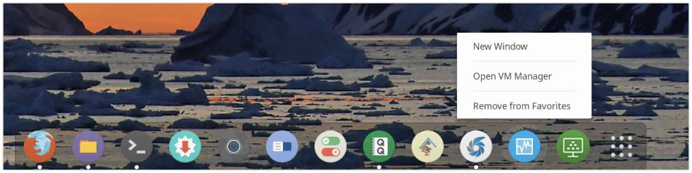
5) 如何在 GNOME 3 桌面中的工作区间之间切换？
工作区间允许你将窗口组合在一起。它将帮助你恰当地分隔你的工作。如果你正在做多项工作，并且你想对每项工作和相关的事物进行单独地分组，那么，它将是非常便利的，对你来说是一个非常方便和完美的选项。
你可以用两种方法切换工作区间，打开活动概述，并从右手边选择一个工作区间，或者使用下面的组合键。
- 使用
Ctrl+Alt+Up切换到上一个工作区间。 - 使用
Ctrl+Alt+Down切换到下一个工作区间。
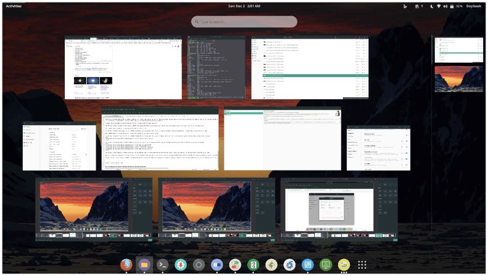
6) 如何在 GNOME 3 桌面中的应用程序之间切换 (应用程序切换器) ？
使用 Alt+Tab 或 Super+Tab 来在应用程序之间切换。为启动应用程序切换器，使用 Alt+Tab 或 Super+Tab 。
在启动后，只需要按住 Alt 或 Super 键，按 Tab 键来从左到右的依次移动接下来的应用程序。
7) 如何在 GNOME 3 桌面中添加用户姓名到顶部面板？
如果你想添加你的用户姓名到顶部面板，那么安装下面的添加用户姓名到顶部面板 GNOME 扩展。
8) 如何在 GNOME 3 桌面中添加微软 Bing 的桌面背景？
安装下面的 Bing 桌面背景更换器 GNOME shell 扩展，来每天更改你的桌面背景为微软 Bing 的桌面背景。
9) 如何在 GNOME 3 桌面中启用夜光？
夜光应用程序是著名的应用程序之一，它通过在日落后把你的屏幕从蓝光调成暗黄色，来减轻眼睛疲劳。
它在智能手机上也可用。相同目标的其它已知应用程序是 flux 和 redshift。
为启用这个特色，导航到系统设置 >> 设备 >> 显示 ，并打开夜光。
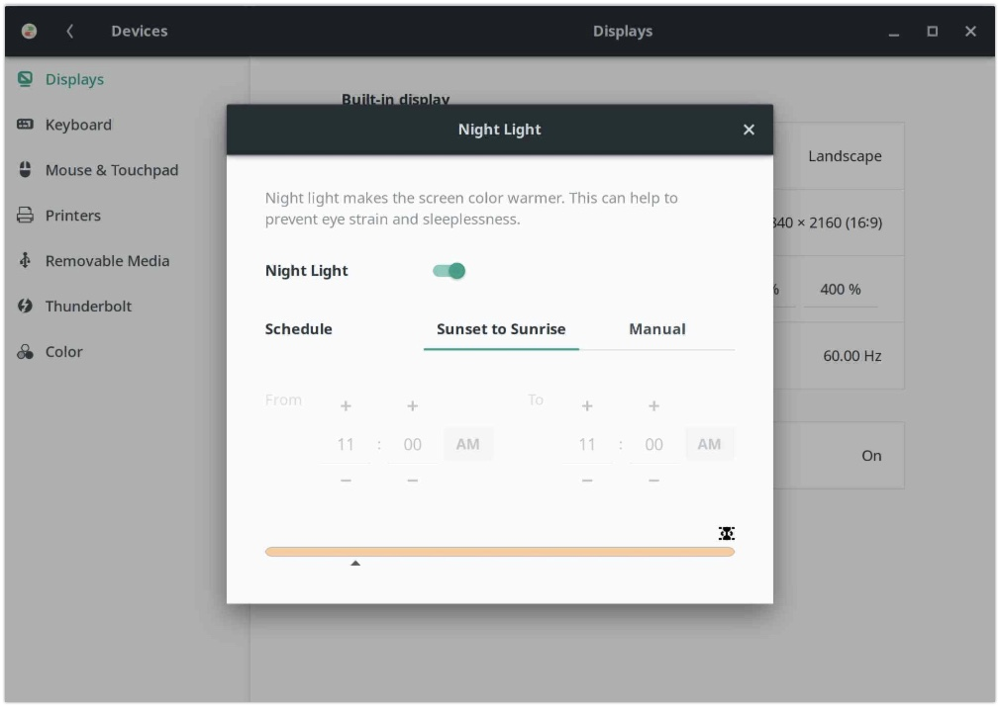
在它启用后，状态图标将被放置到顶部面板上。
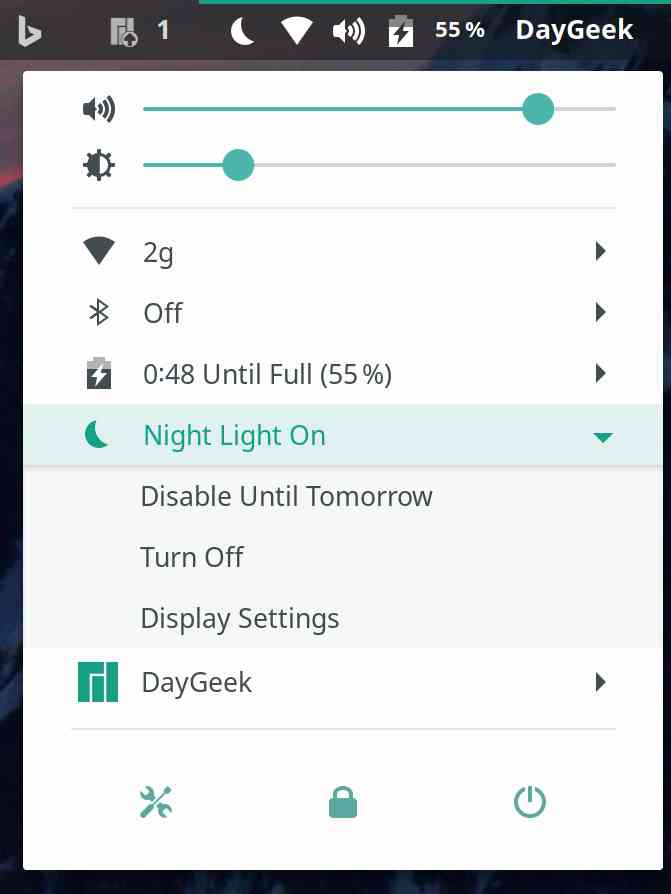
10) 如何在 GNOME 3 桌面中显示电池百分比？
电池百分比将向你精确地显示电池使用情况。为启用这个功能，遵循下面的步骤。
启动 GNOME Tweaks >> 顶部栏 >> 电池百分比 ，并打开它。
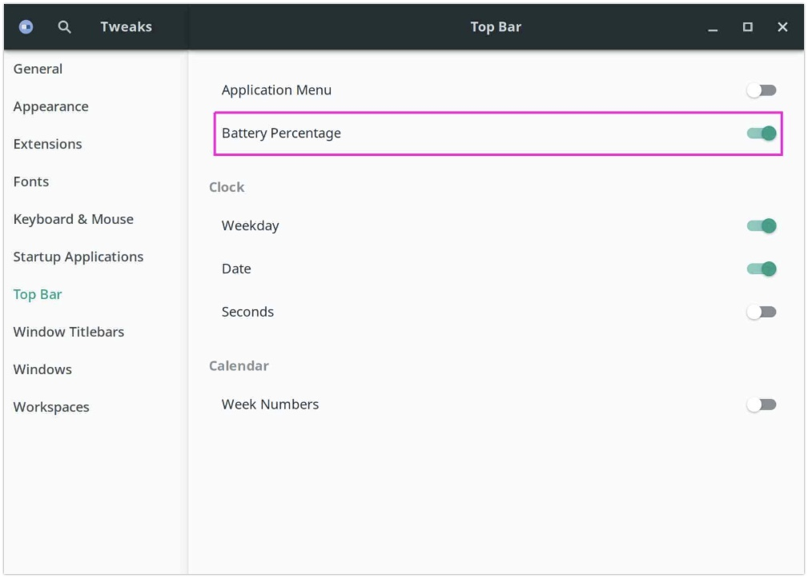
在修改后，你能够在顶部面板上看到电池百分比图标。
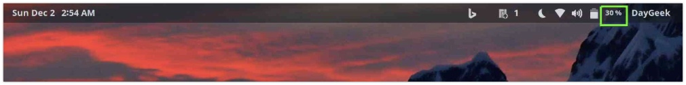
11) 如何在 GNOME 3 桌面中启用鼠标右键单击？
在 GNOME 3 桌面环境中右键单击是默认禁用的。为启用这个特色，遵循下面的步骤。
启动 GNOME Tweaks >> 键盘和鼠标 >> 鼠标点击硬件仿真，并选择“区域”选项。
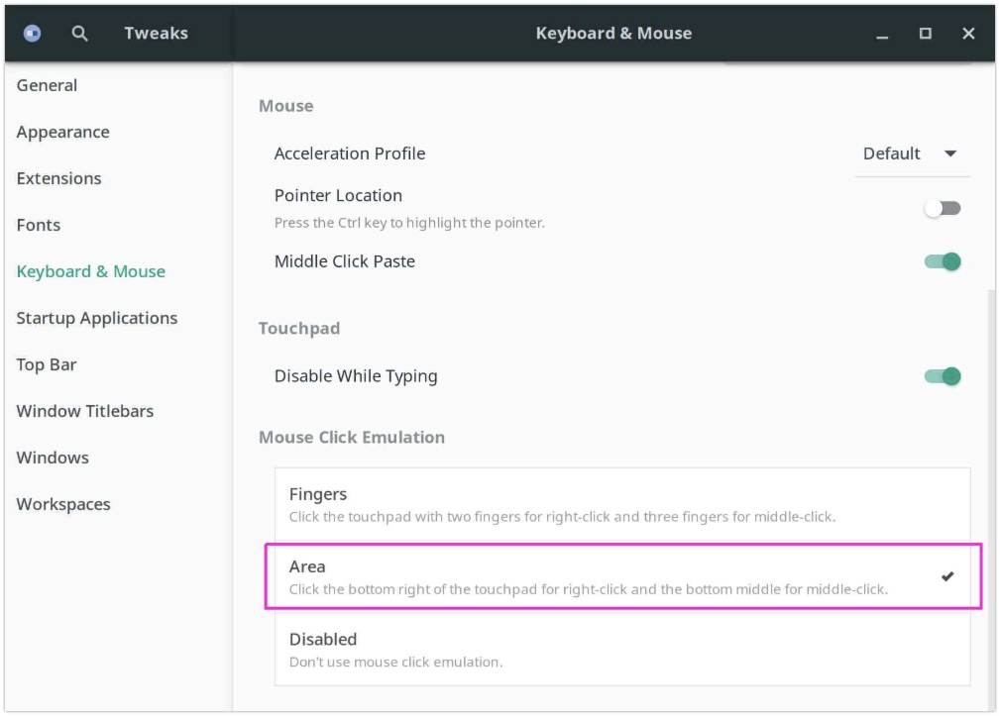
12) 如何在 GNOME 3 桌面中启用单击最小化？
启用单击最小化功能，这将帮助我们最小化打开的窗口，而不必使用最小化选项。
$ gsettings set org.gnome.shell.extensions.dash-to-dock click-action 'minimize'
13) 如何在 GNOME 3 桌面中自定义 Dock ？
如果你想更改你的 Dock，类似于 Deepin 桌面或 Mac 桌面，那么使用下面的一组命令。
$ gsettings set org.gnome.shell.extensions.dash-to-dock dock-position BOTTOM$ gsettings set org.gnome.shell.extensions.dash-to-dock extend-height false$ gsettings set org.gnome.shell.extensions.dash-to-dock transparency-mode FIXED$ gsettings set org.gnome.shell.extensions.dash-to-dock dash-max-icon-size 50
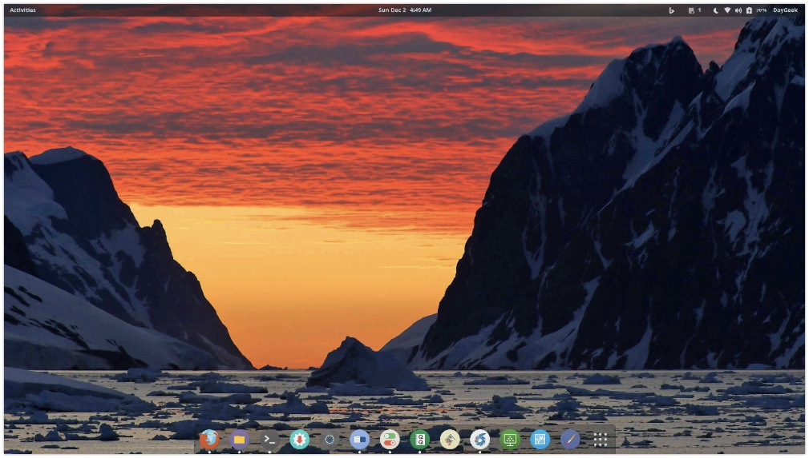
14) 如何在 GNOME 3桌面中显示桌面？
默认 Super 键 + D 快捷键不能显示你的桌面。为配置这种情况，遵循下面的步骤。
设置 >> 设备 >> 键盘 >> 单击在导航下的 隐藏所有普通窗口 ，然后按 Super 键 + D ，最后按设置按钮来启用它。
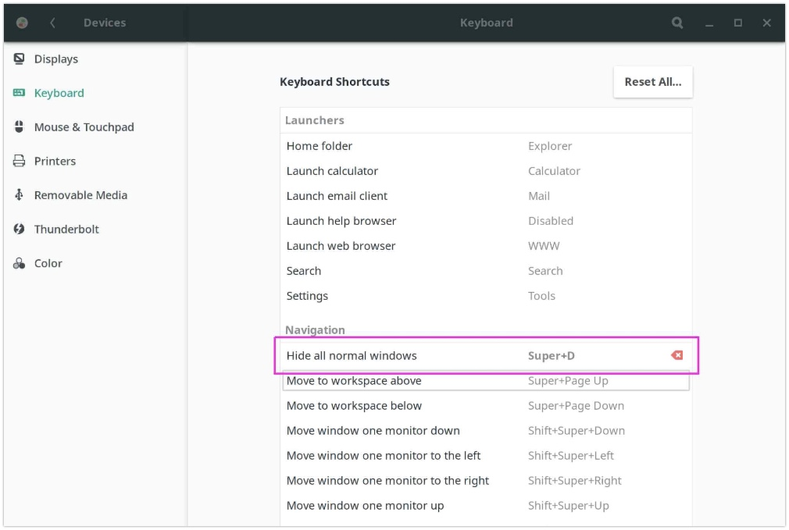
15) 如何自定义日期和时间格式？
GNOME 3 默认用 Sun 04:48 的格式来显示日期和时间。它并不清晰易懂，如果你想获得以下格式的输出：Sun Dec 2 4:49 AM ，遵循下面的步骤。
对于日期修改: 打开 GNOME Tweaks >> 顶部栏 ，并在时钟下启用“星期”选项。
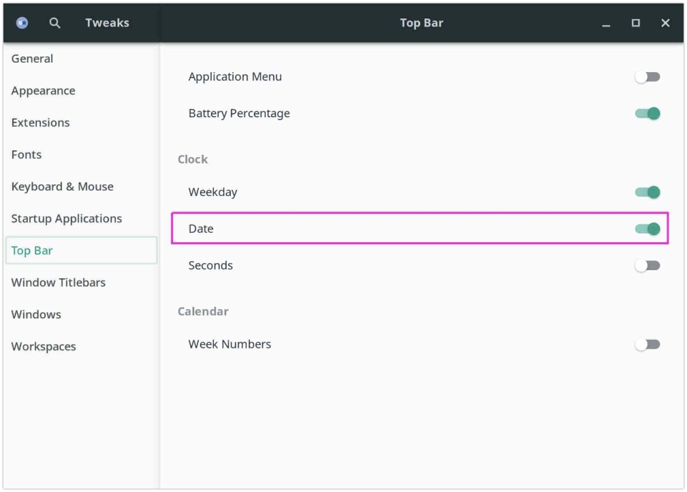
对于时间修改: 设置 >> 具体情况 >> 日期和时间 ，然后，在时间格式中选择 AM/PM 选项。
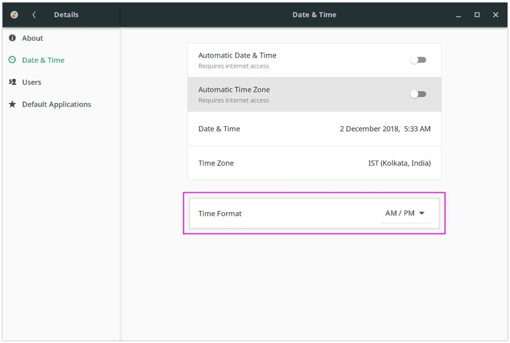
在修改后，你能够看到与下面相同的日期和时间格式。
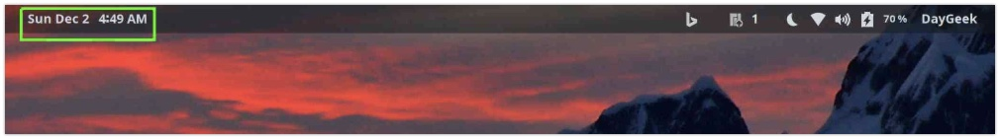
16) 如何在启动程序中永久地禁用不使用的服务？
就我来说，我不使用 蓝牙 & cups（打印机服务）。因此，在我的笔记本电脑上禁用这些服务。为在基于 Arch 的系统上禁用服务，使用 Pacman 软件包管理器。
对于蓝牙：
$ sudo systemctl stop bluetooth.service$ sudo systemctl disable bluetooth.service$ sudo systemctl mask bluetooth.service$ systemctl status bluetooth.service
对于 cups：
$ sudo systemctl stop org.cups.cupsd.service$ sudo systemctl disable org.cups.cupsd.service$ sudo systemctl mask org.cups.cupsd.service$ systemctl status org.cups.cupsd.service
最后，使用以下命令验证这些服务是否在启动程序中被禁用。如果你想再次确认这一点，你可以重新启动一次，并检查相同的东西。导航到以下链接来了解更多关于 systemctl 的用法，
$ systemctl list-unit-files --type=service | grep enabled[email protected] enableddbus-org.freedesktop.ModemManager1.service enableddbus-org.freedesktop.NetworkManager.service enableddbus-org.freedesktop.nm-dispatcher.service enableddisplay-manager.service enabledgdm.service enabled[email protected] enabledlinux-module-cleanup.service enabledModemManager.service enabledNetworkManager-dispatcher.service enabledNetworkManager-wait-online.service enabledNetworkManager.service enabledsystemd-fsck-root.service enabled-runtimetlp-sleep.service enabledtlp.service enabled
17) 在 GNOME 3 桌面中安装图标和主题？
有大量的图标和主题可供 GNOME 桌面使用，因此，选择吸引你的 GTK 主题 和 图标主题。
via: https://www.2daygeek.com/how-to-customize-the-gnome-3-desktop/
作者：Magesh Maruthamuthu 选题：lujun9972 译者：robsean 校对：wxy

- 心上人one [Chrome 78.0|GNU/Linux] 2019-11-16 18:25 1 赞 回复
- 还是使用deepin多一点 www.ljmovie.com
- [1]来自广东深圳的 Chromium 76.0|Ubuntu 用户 发表于 2019-08-22 10:27 的评论：gnome非常不好用，浪费时间，改用xfce了
- 绿色圣光 [Firefox 60.0|GNU/Linux] 2019-08-22 11:12 12 赞 回复
- 但我觉得非常好用。哈哈！